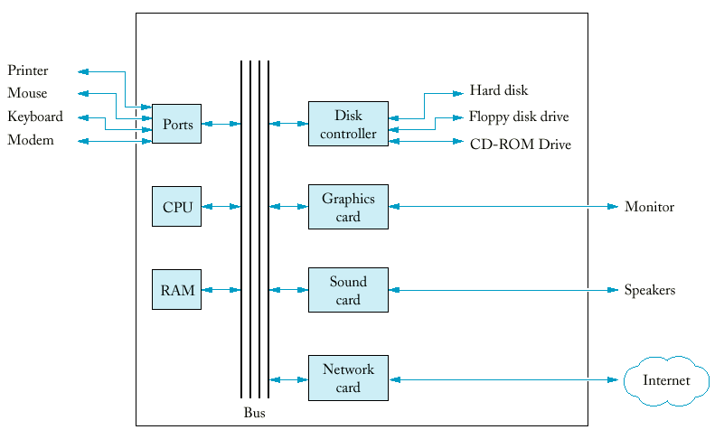

Chapter 1: Introduction - I

Lecture Goals
- To understand the activity of programming
- To learn about the architecture of computers
What is a Computer?
- Computers can handle repetitive chores
without becoming bored or exhausted.
- A computer is programmable to handle
different tasks:
- Balancing checkbooks
- Browsing Internet
- Processing words
- Playing games
- Computer actions are composed of huge numbers
of extremely primitive operations.
- Examples of primitive operations:
- Put a red dot at this screen position
- Get a number from the location in memory
- Send a letter A to the printer
- Add up these two numbers
- If this value is negative, continue the program at that
instruction.
- The computer gives the illusion of smooth
interaction because it executes these operations a great speed.
- Computers are flexible: they can handle a
wide range of tasks because they execute different programs, each of which directs the
computer to work on a specific task.
What is Programming?
- A program tells the computer the sequence
of steps needed to fulfill a task.
- A programmer designs and implements these
programs.
- Most computer users are not
computer programmers.
- Programming is an essential skill
for a computer scientist, software engineer or network specialist
(System administration and Internet programming).
- Programming is not the only skill
required to be a successful computer specialist.
- Early programming experiences are mundane and
will not rival sophisticated software that you are familiar with.
- Once certain skills are developed, even simple
programs can be thrilling.
The Anatomy of a Computer
- CPU (Central Processing Unit):
- Plastic, metal and mostly silicon.
- Composed of several million transistors.
- Enormously complicated wiring.
- Performs program control, arithmetic, and
data movement.
- Locates and executes program instructions.
- Memory:
- RAM (Random Access Memory): read-write memory
(primary storage).
- ROM (Read Only Memory): contains certain
programs that must always be present, the code needed to start a
computer.
- Secondary
storage (e.g. a hard drive or flash memory)
provides persistent storage.
- The bus is a set of electrical lines that
connect the CPU, RAM, and other devices.
- The motherboard holds the CPU, memory,
and bus, as well as card slots which connect peripherals to the
computer (LAN card, sound card, video card, etc.).
- Peripherals allow the user and computer to
interact:
- Monitor
- Mouse
- Keyboard
- Printer
- Modem
- Some computers are connected to one another
through networks.
